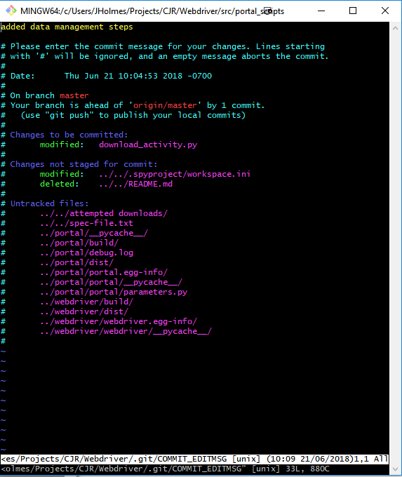

2 Reproducibility
2.1 Configuration files
One thing that programmers constantly face is a changing set of parameters that are used as inputs to any script. Whether this is new data, or a new title for a graph, it always seems to change. If these parameters are hardcoded into a script, the likelihood that you’ll be able to remember where all those inputs are is low. Also, it can make debugging more challenging! An easy way to avoid these issues is to use a configuration file.
Introduction
A configuration file is a file which contains all of our parameters that are likely to change of the lifecycle of the project. Things like paths, variable names, visualization titles, and captions are best stored in a configuration file and then loaded at the top of the script where they are used.
Configuration files are also important to version control. Say that you changed the title of a visualization code, but not the actual function that creates the visualization. If the title is hardcoded into the script, then when you submit a pull request the reviewer of the pull request will have to double-check that it’s not the function that changed, but just the text for the title. If that title were stored in a configuration file, and let’s say you made many changes to many titles, then the other programmer only has to review the one file instead of a bunch, and the underlying code base stays unchanged.
Using a config file, also makes it less likely that bugs will occur. If you path is embedded down in line 403, and you forget to update it to the most recent datafile, uh oh, wrong data gets used or produced!
Formats
Different programmers have different configuration file preferences. The common ones are YAML, JSON, and CSV.
My personal preference is a YAML file and that’s because you can add comments, which you can’t do with JSON, and you can create a nested format, which you can’t do with a CSV. The nested format makes it easy to loop through different models or dataframes which are going to utilize the same functions.
YAML
## YAML files can be commented!
VAR1: 1
VAR2: 2- If using nested yaml structure, make sure to indent with spaces, not tabs!
- Add a final line to a yaml config file, or some software will have difficulty reading it in
JSON
{
"VAR1": 1,
"VAR2": 2
}- JSON can’t do comments
- Web-developers will often use a JSON file because JSON stands for JavaScript Object Notation
CSV
VAR1 VAR2
1 2- CSV files can be really handy ways to organize script parameters, especially if you’re working on a team with people who aren’t used to working in a JSON or YAML file
- One limitation of a CSV is their flat structure, it’s often really nice to be able to nest attributes within other sections of a config file
2.2 Documentation
Documentation is an important step to making code reproducible. Document your code and systems for yourself, other programmers/team members, and maybe most importantly: your future self. It’s unlikely you’ll remember the exact steps you took to produce some output a year from now, but that’s what documentation is for!
Repositories
Repositories are documented with a README.md file and stored in repository root directory.
my_repo\
README.mdThe .md suffix indicates a markdown file. If you have used markdown before here are some resources:
Markdown is an important skill to learn. Many technical documentation systems are created using markdown because it’s easy to learn and can be version controlled with ease unlike other word processing software (e.g. Microsoft Word, or Google Docs).
README
READMEs are documentation for any humans who will need to use that code, including:
- Yourself
- Your future self
- Co-workers or other people who will contribute to your code
- People who will use your code
- Clients if the code will be delivered to them at the end of the project (some code technically belongs to clients)
On any version control system (e.g. Github, Bitbucket, TFS) the README will be rendered as HTML and displayed on the repository page.
General README Structure
In general, READMEs should follow this format, but they of course can deviate to provide more or less information where necessary.
- A paragraph describing the high-level purpose of the package
- An example showing how to use the package or repository of code to solve a simple solution
- Installation instructions
- An overview that describes the main components of the package
General questions to answer in a README:
- What are the exact steps that need to be taken to get up and running?
- What should someone already have installed or configured?
- What might someone have a hard time understanding right away?
- Any known issues or bugs?
- Where are the data for this analysis stored?
- What do we expect those data to look like?
Code
Functions
Always document your functions. Include a short description about what the function does, what parameters the function takes, what the function returns, and even a short example!
If you find yourself have trouble summarizing what the function does in a short description, this is a good indicator that you need to break that function into multiple parts. This is also very important for testing, which we’ll get to later on!
Code-specific documentation best practices will be discussed in the 03-languages section.
Commenting Code
One of the first things many programmers learn is to comment their code, to provide information about the steps they are taking. While we want to encourage commenting code, we also want to be careful. Some programmers will write huge blocks of text before executing a number of steps. If this is you, we want to make things more modular. One line should be able to describe any function.
Data
Data Dictionaries
Like code, it’s important to document your data with a data dictionary. A data dictionary contains information about variable names and their corresponding meta data. A data dictionary should always contain labels, as variables often aren’t easy to identify what data they represent. A data dictionary can also contain information such as: variable type (e.g. numeric, string, date, or integer, float if you want to get more specific), variable length, allowable values for descriptive variables, units of measure for numeric values.
Data Dictionary Resources:
Systems
One of the more challenging things to document is a system. Generally speaking, if we’re talking about a system, then we’re talking about a team of people responsible for developing and maintaing a code base, as well as other documentation.
If possible, it’s best to store code repositories at the project level. So all of the repositories that contribute to a system are stored under the same project. Then at the system-level create a README to document how the system works.
General questions to answer: * How the output from one repository used as an input in another repository? * What tests are run in-between? * What are the necessary parameters for each section of a system to run? * What is the timeline of the system run? Hours, Days, Months?
2.3 Git version control
Introduction
Version control systems allow for easy access to prior versions of code, branching for development, and easy of collaboration between programmers. Different version control systems exist across several industries, but it is considered best practice to use a git as your version control system for any coding task.
Git is important to use to keep track of code version histories. Code isn’t static and just written once and executed, but is consistently changing. Version control is necessary to keep track of these updates.
Repository set-up
Each repository should start with these branches
master
- All code in this repository has been tested and is solid
- This code has been ‘released’
develop
- The develop branch is created from the master branch
- This code is has also been tested and is solid but is pre-release
feature branches
- Feature branches are stored in the features/ folder
- Feature branches are created from the develop branch
- This code is in development
- It may be pre-tested right now and is still in progress
WorkFlow
Download the code base
Download the code base from the remote repository. This is called pulling. Navigate to the folder where the code base should be stored by using the cd command.
git clone path_to_repo
Checkout a branch
Checking out a branch is like opening a file. A branch is a group of files that are the “Saved As” version of the files on the master or develop branches.
git checkout branch_name
Make changes to the code base
Edit your code. Remember to test the code before commiting it. Try to avoid commiting broken code!
Review which files changed
We always want to review which files changed, to make sure we don’t miss any changes that other code relies upon.
git status
Review changed files
Review the changes. Imagine you had track changes on in Word and you can see the old and new versions.
git diff file_name
Stage the file(s) for commitment
git add file_name
Write a commit message
Make the commit message short, and descriptive of the why, not the what! Remember that commits should be frequent enough that “and” isn’t needed in the commit message
git commit -m "commit message".
Update remote repository
Repeat all prior steps until you’re ready to update the code on the remote repository.
git push origin branch_name
Pull Request
Get another programmer(s) to review the code by submitting a code request to the develop or master branch. TODO: Add more information about PULL REQUESTS
Checkout changed code
Once the pull request has been accepted pull down the updated code from remote.
git checkout other_branch
git pull other_branchIn-depth development workflow
- A develop branch is created from master
- Feature branches are created from develop
- When a feature is complete a pull request is made for a potential merge into the develop branch
- This request goes through a code review and can be approved/rejected by the technical lead
- When develop branch is complete for a given cycle, a release branch is created from develop
- When the release branch is tested and deemed ready for production it is merged into develop and master
- If an issue in master is detected a hotfix branch is created from master
- Once the hotfix is complete a pull request is made for a potential merge to both the develop and master.
The Dos and the Don’ts
Git Don’ts
Version control sensitive data
This is a security concern. Servers which host remote repositories are not necessarily as secure as the network the data are stored on. Additionally, storing the data in more than one location increases the likelyhood that a data breach could occur.
Use git as a data versioning tool
Git is not a data versioning tool. This book will discuss data versioning at a later point! Storing data on the git (even unsensitive data) will clutter the repository’s history.
An exception to this rule may be storing static metadata (e.g. config file) or fake data used for unit testing, along with some other well thought-out special cases. Think very carefully about whether there’s a good reason to put data in the repository and seek guidance before doing so.
Version control binary files
Any file that cannot be opened by a text editor (Notepad, Atom, Sublime, etc.). If you are unsure about whether a file is a binary file, just try to open it in Notepad—if you see a bunch of gibberish then it is! If you see a proper text representation of what you know the file contains, then it isn’t!
Git is a version control tool, meaning that it tracks changes to the contents of a file. This works great for text files, but not at all for binary files. If you change a single character of a Word document, all of the contents of the binary file will change. This means that git will not be able to show you what changed about the file, only that the file changed.
Don’t version these file types:
- Word documents (.doc, .docx)
- Excel files (.xls, .xslsx, .xlsm, .xlsb, …)
- Images (.jpg, .png, …)
- Executables (.exe, .dll, …)
- SAS/Stata/other data files (.sas7bdat, .dta, .dat (sometimes), …)
There can be exceptions, but generally it is bad practice to version control this type of file. They, like data, will bloat the repository for no good reason.
Version control temporary files
Windows and other programs often create temporary files when a file is in the process of being written or when a team member has the file open. They often have weird names starting with “~$” or extensions like “.bak”. Don’t version control these as they are temporary!
Version control output files
This includes log files and other direct program output. Like binary files, these files are likely to change a lot when they change, but they are also conceptually more like data than they are like code.
Use name versioning for files tracked by git
Code should never be names _v1 or _v2_final or _v3_final_final_JH. Git takes care versioning for you! The days of archiving code and renaming different versions are over! Just make your change and commit it. Then, to access the previous version, just use git checkout or use git diff or git show to view changes.
Gits Dos
Write concise and informative commit messages
Commit messages are the easiest way for other collaborators and future versions of yourself to figure out what changes were made in each commit. This makes it easier to trace errors, keep track of features, and find explanations for changes. Remember the commit message should explain the why not the what.
Make each commit a single cohesive change
Conceptually, each commit should be a single unit of work (e.g. “fixed bug X” or “added X section to report” or “changed working in section X”). This unit of work could be small (a couple lines of code, or even fixing a typo) or it could be large (adding an entire section to a program), but all changes/additions/deletions within a commit should be related. A quick rule is that you should rarely need to use the word “and” in a commit message—if you are, then you should probably make that commit into two or more commits.
Doing this helps everyone get a better sense of what each commit changed, but also makes it easier to inspect and roll back changes. We wouldn’t want to have to undo a change unrelated to the one that actually needs to be reversed
When adding files to be committed, use git add [file/s] to add only certain modified files to staging. Use git reset to unstage all files if you accidentally add too many
Review all changes before committing
This quick and simple step should make sure that you avoid all of the “do nots” above 99% of the time.
- First add the files you want to commit:
git add [files]orgit add .to stage all files for commit - Review the changes:
git statusto see a list of all files that will be committed, andgit diff --cachedto see a detailed view of all changes to each staged file - Commit!
git commit -m [my concise and informative commit message]
Use a .gitignore file
A .gitignore file that tells git which file types not to track. Git will ignore any files that match patterns specified in the .gitignore.
Gitignore
A .gitignore file tells git which files should not be tracked by version control. Common files extensions to inlucde data file extensions, binary files, executables etc.
If a .gitignore is included in the working directory the command git add . will only add files where the file extensions do NOT appear in the gitignore.
Create a .gitignore
In the command line/terminal type echo > .gitignore
To create the file manually, save the files and folders that start with a period with a trailing period. E.g .gitignore.
Where to put the .gitignore
Generally, you want the file location to be at the root directory of the project, in the same directory as the .git folder
Extensions often included in a .gitignore
Data
*.csv*.xlsx*.docx
Julia
Python
SAS
*.sas7bdat
Stata
*.dta
Git still tracking files marked in gitignore
This happens because these files were originally add to git. Even if the files are removed from git and added into the .gitignore, git still wants to track the files.
Here’s the stack solution.
Common Commands
| Action | Git Command |
|---|---|
| Branching (like a Save As for code) | git branch new_branch_name |
| To pull down a local version of a remote branch and switch to that branch | git checkout --track origin/remote_branch_name |
| To fetch all branches | git fetch --all |
| To rollback to an old Git commit on the repo. Revision is the commit hash. | git checkout [revision] . |
| To create and checkout a branch | git checkout -b branch_name |
| To undo the rollback to an old Git commit on the repo | git reset --hard |
| To check which tracked files have been changed | git status |
| Compare code changes between previous commit and current code | git diff name_of_file |
| To stage a modified file to be committed | git add name_of_file |
| To un-add a modified file | git reset HEAD |
| To commit staged files to your local repo without opening VIM to write a commit message | git commit -m 'commit message' |
| To push your local repo to the remote repository | git push origin local_branch_name |
| Amend or change a commit message | git commit --amend |
| To push the new branch to the remote | git push --set-upstream origin <new_branch_name> |
| Delete a branch on remote (post-merge w/ master and post-code review!) | git push --delete <remote_name> <branch_name> |
| Delete a branch locally (post-merge w/ master and post-code review!) | git branch -d <branch_name> |
VIM Editor
The VIM (Vi IMproved) editor is a text editor for unix/linux operating systems. However, sometimes when using git commands the editor will appear. Examples of when it appears are during merges, or editing commit messages.

One of the only commands you need to know with the VIM editor is how to save and close. To do so: hit the Esc button on the keyboard. And then type :wq to save and exit.
Additional Resources:
Practice
Practice using git commands to version control code with the repository here.
Glossary
| Term | Definition | |
|---|---|---|
| B | ||
| branch | An active line of development. More literally it is a local copy of the code. Branching off of the master branch preserves the stability of the code. | |
| bitbucket | An Atlassian another server used to host code | |
| C | ||
| checkout | The action of updating a branch | |
| clone | The action of copying the repository hosted on server to a local computer | |
| commit | A single point in the code’s history. It contains a hash #, which is unique and a commit message which indicates why changes were made to the code base. | |
| F | ||
| fetch | To get the branch’s head from the remote repository | |
| G | ||
| git | Version control system a tool to manage your source code history | |
| github | A public server to host vresion controlled code | |
| gitignore | A file used to indicate which file types should not be tracked by git | |
| L | ||
| local | The version of the code that exists on your computer; your local repository | |
| M | ||
| master | The default development branch! You can think of master as the stable version of your code. If you need to make updates/changes to the code, consider making those changes on a branch and then merging that branch into master once your code has been code reviewed and tested for bugs. | |
| merge | To bring the contents of a different branch into the current branch. | |
| O | ||
| origin | The upstream (original) repository. | |
| P | ||
| pull | To fetch a branch and merge it. | |
| push | To send the changes from the local branch to the remote branch. | |
| R | ||
| remote | The version of the code that exists on the server; i.e. the remote repository. | |
| repository (repo) | A collection of code, commits, branches, and tags. | |
| S | ||
| stage | Code must be staged before it can be committed. | |
| T | ||
| tag | A reference typically used to mark a particular point in the commit chair. | |
| U | ||
| unstage | ||
| V | ||
| VIM |
2.4 Environments
Note this section is only application to users of open-source software. SAS and Stata users, you can skip this section, unless of course you’re interested in learning more!
Introduction
The cool thing about open-source software is that anyone with a knowledge of that software can help build packages for the software community. Open source software is amazing, because there’s a huge community of programmers out there trying to achieve similar goals given similar constraints.
There are however, some big downsides to utilizing open source software. One of the biggest is that developers of packages churn out updates that may or may not be backwards compatible with older versions of their packages. Packages are rolled-out continuously and aren’t built as part of one central, commercialized system, which can result in version control issues for software users.
And it goes beyond packages! Python rolled out version 3 of the language in 2008.4 Yet, a lot of Stack Overflow answers are still written using Python 2. When I try to run Python 2, I get errors, which then have to be debugged.5
Fortunately, there’s a simple solution: multiple development environments! To make code reproducible across time and across machines, it’s best to work with multiple environments. An environment takes a snapshot of the user’s system at that point in time. Others can then generate the same environment and still be able to run code, even as packages and languages continue to change and develop over time.
Using Multiple Environments
- Code that doesn’t break
- Ease of collaboration
- Client deliverables
Read this article to learn more!
2.5 Packages
Introduction
Have you noticed yourself recycling code? Maybe you go back to an older project and copy a bunch of the functions over to the new script you’re working in. If this is you, it’s time to write a package!
Developing packages is an important skill because it saves time, but also reduces the likelihood of introducing bugs into the code. All code should be tested, 3.1, but it should really only need to be tested once. Packages are also a great way to update code utilized across multiple projects. Say you optimized a function, and now it runs in half the time it took before, well we don’t want to copy and paste that code to all the projects that used that original function. Instead, we just update the package, and it also long as there we’re any major developments to the package it should be smooth sailing.
Many new programmers fear writing packages because they assume it’s a very advanced technique. Although, it is more advanced, it’s really not very different than writing scripts. It’s just a very nicely packaged bundle of all those scripts.
Versioning
Packages have versions, with smaller numbers signaling earlier versions of the package.
The in-development package has 4 numbers: major.minor.path.dev Released packages don’t have a dev component
Patch Versions
A patch is used when bugs are fixed without the additional of any new significant features. However, most releases will have a patch number of zero. This could look like (0.8.0 to 0.8.2)
Minor Release
A minor release can include bug fixes, new features, and changes in backward compatibility. Minor releases can have two or even three digits. This could be (1.17.0 to 1.20.0)
Major Release
A major release includes changes that are not backward compatible and are likely to affect many users.
2.6 Data Archiving
Introduction
Many people, companies, and organizations seem to struggle with data archiving. Data gets pulled from whatever system, then gets processed, generates output, and the output is then delivered. And somehwere along the way after generating output the data get saved. The process seems simple enough!
Most people just write out the data to the Data/ folder. However, in large projects the data folder can quickly get messy. All the sudden there are files like summary_data_v1.xlsx, data_v2_20180912.csv, or there are the folders in which the data just get overwritten over each time. These folders may look clean, but the output generated from these data will never be able to be replicated again.
The folder structure where the date get written over each time clearly has issues, but so does the folder with the data title data_v2_20180912.csv. Even is these data are data_20180912.csv, this still creates issues! If those data need to be re-generated, and then they’re used as an input downstream, then the downstream code has to be changed as well. The likelihood that the project is in it’s final stages, or very behind, or someone doesn’t communicate that the data has changed is high! So then data_20180912.csv never gets changed to data_20180922.csv, which then causes everyone to freak out because the deliverable is due, but the issue still isn’t fixed, but it really is, we just forgot to change the path! AHHH!!!
To make things even worse, when we generate the final deliverable did it come from the data versioned data_20180917 or from data_20180912? Although it’s often the case that the most recently generated data is used to create the final output, it’s not always the case.
There has to be a better system … and there is!
Suggested folder structure
I’m sure there are multiple ways for solve this problem, but I’ve been very successful using one in particular.
This is the file structure that I use.
Data/
Processed/
Current/
Archive/
Raw/In the data folder there are two folders: Processed and Raw. Raw contains the raw data and processed contains the data that have been validated and managed.
Within the processed file there are two folders: Current and Archive. The Current folder contains the most recently processed files. The files in this folder DO NOT have time specific names. There aren’t any data like summary_data_20180912.csv. Instead there’s just a file that says summary data.csv.
However, in the Archive folder, there are timestamped zipfiles containing all the data that were generated on a single day. All the zipped files in this folder are named systematically such that it’s easy to tell when the data were create and maybe why!
Example:
Data/
Processed/
Current/
data.csv
summary_data.csv
summary_stats.csv
log.txt
Archive/
20180912.zip
20180917.zip
20180922.zip
Raw/If we were to open up 20180912.zip it would look like this:
data.csv
summary_data.csv
summary_stats.csv
log.txtWowza, this structure solves a lot of problems! We don’t have to worry about filenames downstream having to get updated because they’re pointed at the Current folder. At the same time, we have a record of all the data we created, that way if we delivered output generated from data 20180717, and the client/partner has a question about the data, we can easily open it up and access it.
Automated Commits
If we follow the structure outlined above, out data archiving system is going to be great. But it can actually still be improved. There is still one issue that we haven’t solved and that’s linking the code that creates the data which creates the output.
Say we have a question about why a specific variable in summary_data.csv is coded in version 20180917.zip. But of course since then, the code used to create those data may have changed. We can probably trace the code back, since we’re of course using version control, and figure out how the code changed between 20180917 and 20180922. But then we sent multiple versions of the output to the client/partner and they would like to know exactly how each was created.
What’s the solution?
The solution is to include a commit hash in all of the Archiving names. So when we update the code, we make a commit to the remote repository. This commit hash is a unique identifier that points to a version of the code at a specific point in time. That hash then gets used to link the code to the data and the data to the output.
Now our Data and Output folders look like this:
Data/
Processed/
Current/
data.csv
summary_data.csv
summary_stats.csv
log.txt
Archive/
master_t5o985_042018.zip
master_5986j6_052018.zip
master_9jfd86_062018.zip
Raw/Output/
Processed/
Current/
fig1.png
fig2.png
fig3.png
Archive/
master_t5o985_042018.zip
master_5986j6_052018.zip
master_9jfd86_062018.zip
Raw/If we send the client/partner master_t5o985_042018.zip and there’s a question about how data or a figure got created, it’s super easy for us to back track to both the data and the code.
It’s recommended to set-up the archive folders as the in following format: branchName + _ + commit hash + _ + date/description. The date/description part makes it easy for you to find a specific version of the data/output without knowing the exact date or why the output was created.6
Both R and Python have the ability to make automatted commits.
Linus was a previous co-worker of mine when I worked at Mathematica Policy Research↩
https://learntocodewith.me/programming/python/python-2-vs-python-3/#history-of-python2-vs-3↩
99% of the time this is related to the print statement and takes 2 seconds to change, but the example of why this is an issue remains!↩
I worked on a project one time where we produced data from the client each month, and we named all our files as with the description as “master_commit hash_May Monthly”, “master_commit hash_June Monthly”, etc. Then if I need data from Jan - June, it was very easy for me to go in and figure out which data were created when.↩